Sistem Informasi Guru, Absensi, dan Prestasi — satu tempat untuk data sekolah,
kehadiran guru, jurnal mengajar, nilai, dan pemantauan orang tua.
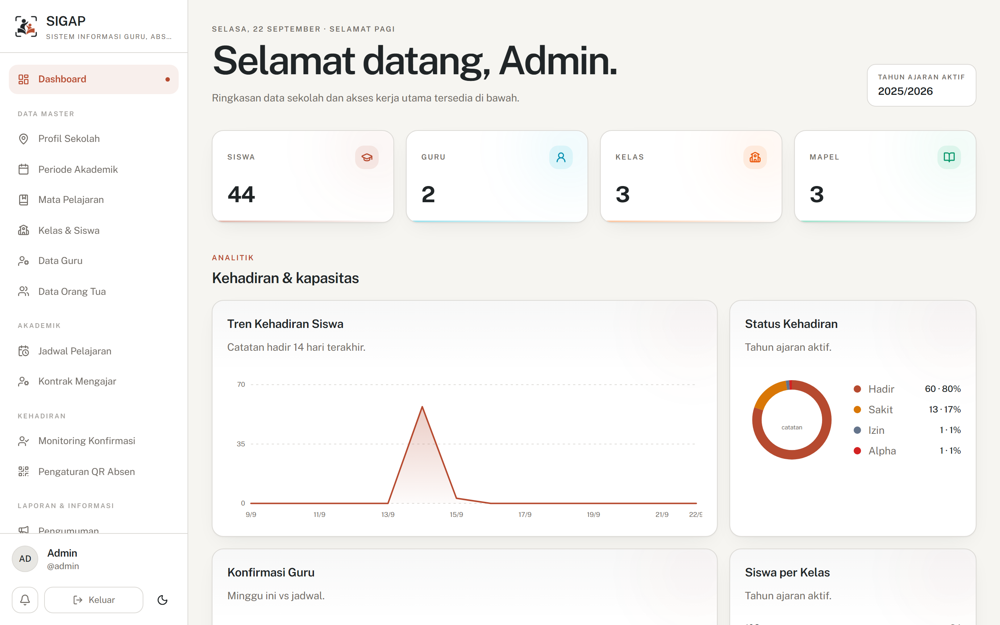
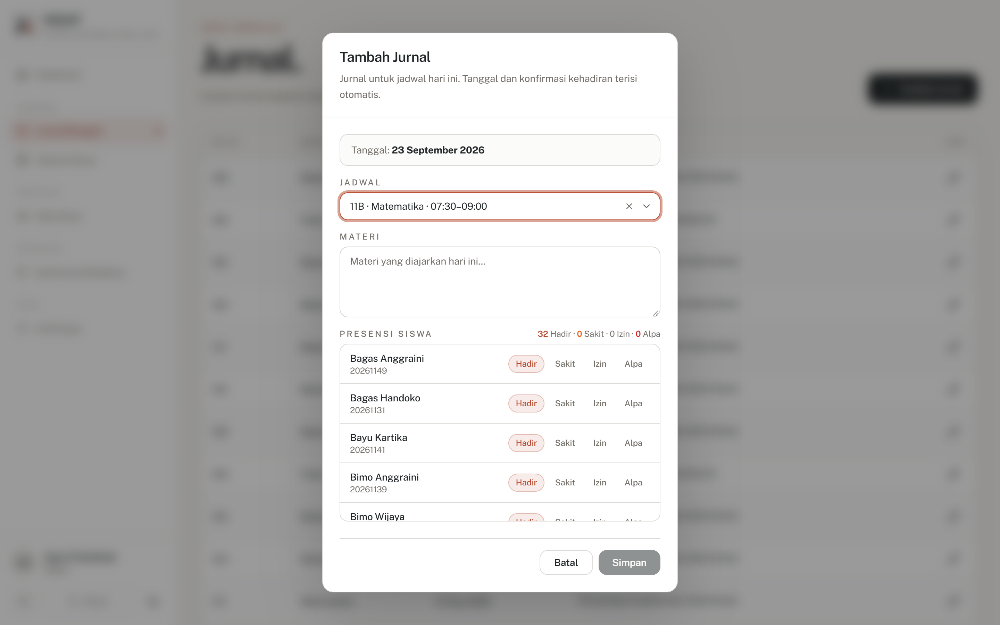
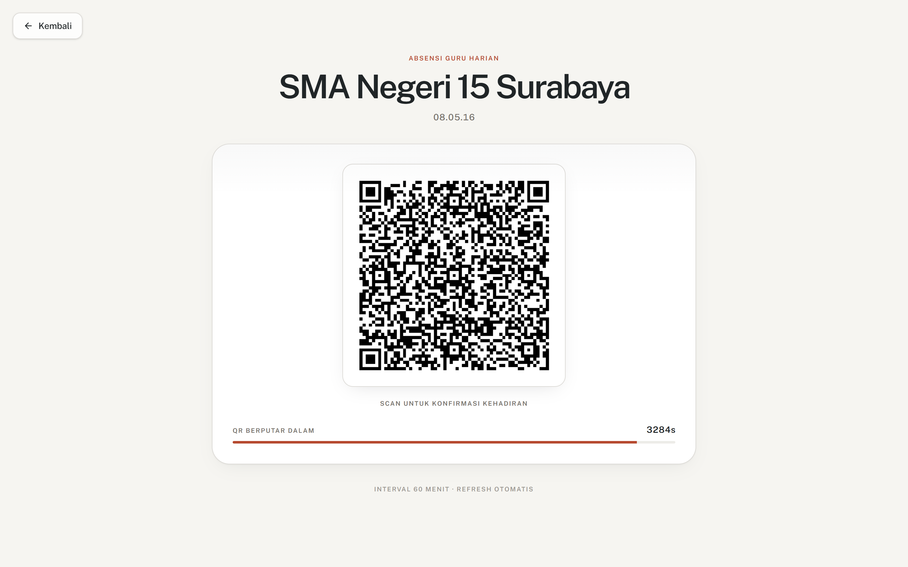
UntukAdministrator · Guru · Kepala Sekolah · Orang Tua/Wali
BahasaIndonesia
CetakUkuran A4, potret
Daftar Isi
Bagian 1 — Mengenal SIGAP
1.1 Masalah yang dijawab SIGAP
1.2 Empat peran pengguna
1.3 Yang perlu disiapkan
Bagian 2 — Mulai Memakai
2.1 Masuk ke sistem
2.2 Mengenal layar kerja
2.3 Profil dan kata sandi
2.4 Keluar
Bagian 3 — Administrator
3.1 Profil sekolah dan batas lokasi
3.2 Periode akademik dan publikasi nilai
3.3 Mata pelajaran dan KKM
3.4 Kelas dan siswa
3.5 Import siswa massal sekaligus akun orang tua
3.6 Data guru dan kontrak mengajar
3.7 Jadwal pelajaran
3.8 Pengaturan QR absen dan layar QR
3.9 Pengguna, peran, dan hak akses
3.10 Pengumuman
Bagian 4 — Guru
4.1 Dashboard jadwal hari ini
4.2 Konfirmasi kehadiran dengan QR
4.3 Jurnal mengajar dan presensi siswa
4.4 Nilai siswa
4.5 Rekap absensi siswa
4.6 Rapor siswa
Bagian 5 — Kepala Sekolah
5.1 Delapan kartu ringkasan
5.2 Rata-rata Nilai per Kelas
5.3 Kehadiran Guru (30 Hari)
5.4 Monitoring Konfirmasi
5.5 Laporan Kehadiran Guru
5.6 Audit Nilai
Bagian 6 — Orang Tua/Wali
Bagian 7 — Alur Harian Ringkas
Bagian 8 — Tips dan Pemecahan Masalah
Lampiran A — Menu yang tampak per peran
Lampiran B — Glosarium
Lampiran C — Akun demo lingkungan percobaan
Bagian 1 — Mengenal SIGAP
1.1 Masalah yang dijawab SIGAP
SIGAP menyatukan kebutuhan sekolah yang biasanya berjalan terpisah di buku, kertas, dan lembar sebar.
Kebutuhan
Biasanya
Dengan SIGAP
Data guru, siswa, kelas, mapel
Buku induk dan berkas terpisah
Satu basis data, terhubung sejak awal
Absensi guru
Catatan manual, rawan titip absen
Scan QR di sekolah dengan bukti foto dan posisi GPS
Jurnal mengajar
Buku jurnal kertas
Terisi per jadwal, sekaligus menjadi presensi siswa
Nilai dan rapor
Rekap spreadsheet
Nilai per komponen, rapor tercetak, orang tua memantau sendiri
Informasi ke orang tua
Surat atau grup obrolan
Notifikasi dan pengumuman di akun orang tua
Yang membuat SIGAP berbeda: data siswa langsung terhubung ke akun orang tuanya. Satu akun orang tua
hanya bisa melihat nilai dan absensi anaknya sendiri — bukan kelas, bukan sekolah.
1.2 Empat peran pengguna
Administrator
Mengisi seluruh data master (profil sekolah, periode akademik, mapel, kelas, siswa, guru, orang tua), mengatur pengguna dan hak akses, mengatur QR absen, membuat pengumuman.
Guru
Konfirmasi kehadiran harian lewat QR, mengisi jurnal mengajar beserta presensi siswa, memasukkan dan mengubah nilai kelas yang diampunya, melihat jadwal mengajarnya.
Kepala Sekolah
Mengawasi kehadiran guru, melihat rekap nilai per kelas, memeriksa riwayat perubahan nilai (audit), membaca laporan konfirmasi di luar radius sekolah.
Orang Tua/Wali
Melihat daftar anaknya, nilai dan rapor tiap anak, rekap absensi anak, serta pengumuman dan notifikasi dari sekolah.
Satu akun hanya punya satu peran. Hak akses menentukan menu apa yang muncul di sidebar — jadi tidak ada tombol
yang “hilang”, memang tidak ditampilkan untuk peran tersebut.
1.3 Yang perlu disiapkan
Perangkat: komputer atau laptop dengan peramban modern (Chrome, Edge, Firefox, Safari terbaru). Untuk memindai QR, guru memakai HP atau laptop berkamera.
Alamat aplikasi: diberikan sekolah, misalnya http://localhost:5555 pada lingkungan percobaan atau alamat server sekolah.
Akun: username dan kata sandi dibuatkan administrator.
Izin kamera dan lokasi: diminta sekali saat pertama kali memakai fitur absensi.
CatatanSIGAP dirancang agar satu orang di sekolah (administrator atau petugas tata usaha) cukup mengelola seluruh data master. Guru, kepala sekolah, dan orang tua tidak perlu memasang apa pun — mereka memakai aplikasi lewat peramban di komputer maupun HP.
Bagian 2 — Mulai Memakai
2.1 Masuk ke sistem
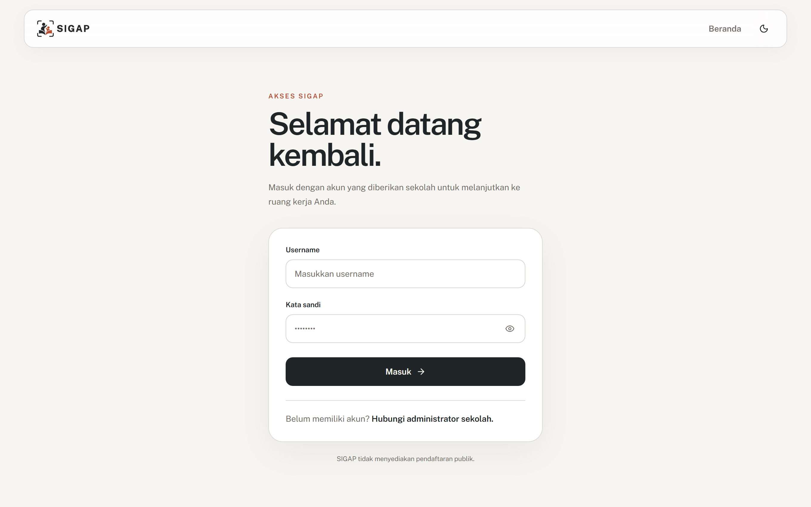
Halaman masuk — username dan kata sandi diberikan sekolah.
Buka alamat SIGAP di peramban.
Halaman awal adalah Beranda. Klik tombol masuk untuk membuka halaman Akses SIGAP.
Isi Username dan Kata sandi.
Klik Masuk.
Anda dibawa ke layar sesuai peran: administrator ke Dashboard, guru ke Jadwal Mengajar, kepala sekolah ke Dashboard Pengawasan, orang tua ke Dashboard Anak.
Lupa kata sandi? Hubungi administrator sekolah — hanya administrator yang dapat menyetel ulang kata sandi melalui menu Pengguna.
2.2 Mengenal layar kerja
Dashboard administrator: kartu ringkasan data dan grafik kehadiran.
Setelah masuk, layar terbagi menjadi tiga area:
Area
Isi
Sidebar kiri
Menu utama, dikelompokkan: Data Master, Akademik, Penilaian, Kehadiran, Laporan & Informasi, Manajemen, Akun. Menu aktif ditandai warna dan titik di kanannya.
Isi halaman
Tabel, kartu ringkasan, grafik, dan formulir sesuai menu yang dipilih.
Kanan bawah sidebar
Ikon notifikasi (lonceng), tombol Keluar, dan tombol mode gelap/terang.
Kebiasaan antarmuka yang berlaku di seluruh aplikasi:
Tombol di kanan atas halaman (misal Tambah Siswa, Import CSV) membuka formulir di tengah layar, bukan halaman baru.
Kolom pencarian di atas tabel menyaring data tanpa memuat ulang halaman.
Kolom Aksi di ujung kanan tabel berisi tombol ubah (pensil) dan hapus (tempat sampah).
Pesan hijau berarti berhasil, pesan merah berarti ada yang perlu diperbaiki.
Posisi gulir sidebar dipertahankan saat Anda berpindah menu.
2.3 Profil dan kata sandi
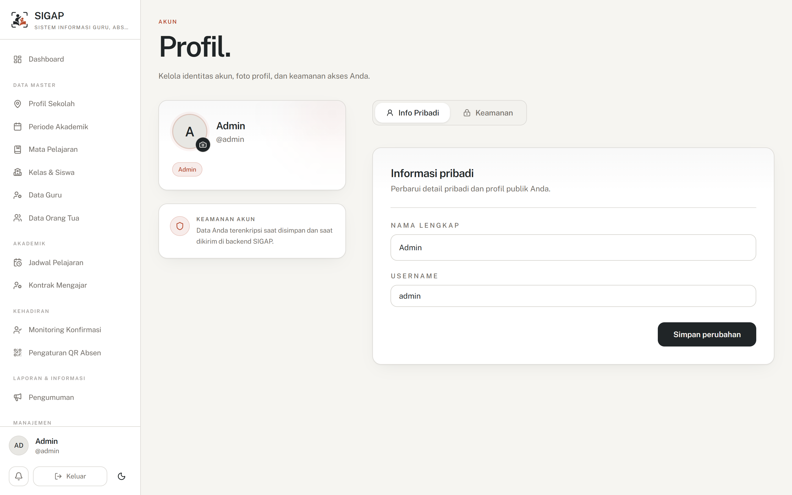
Profil Saya — dua tab: data profil dan ganti kata sandi.
Menu Akun → Profil Saya berisi dua tab:
Profil — mengubah nama, username, telepon, dan foto profil (unggah gambar).
Kata Sandi — isi Kata sandi lama, lalu Kata sandi baru beserta konfirmasinya, lalu simpan.
Ganti kata sandi pertama kali setelah akun Anda dibuat administrator.
2.4 Keluar
Klik Keluar di bagian bawah sidebar. Jangan hanya menutup tab — keluar memastikan sesi Anda benar-benar
berakhir, terutama di komputer sekolah yang dipakai bersama.
Bagian 3 — Administrator
Administrator adalah orang pertama yang mengoperasikan SIGAP. Urutan di bawah ini adalah urutan yang disarankan,
karena menu berikutnya bergantung pada data sebelumnya.
3.1 Profil sekolah dan batas lokasi (geofence)
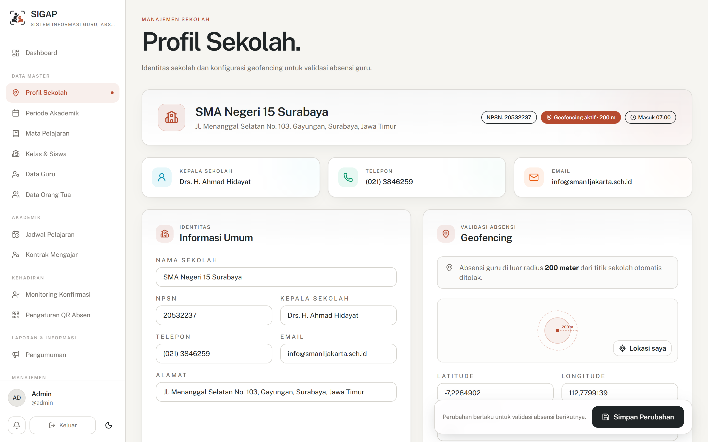
Profil sekolah — identitas sekaligus penentu batas lokasi absensi guru.
Menu Data Master → Profil Sekolah. Isi identitas sekolah: nama, NPSN, nama kepala sekolah, telepon, email, dan alamat.
Tiga kolom berikut menentukan cara kerja absensi guru:
Kolom
Fungsi
Latitude dan Longitude
Titik pusat sekolah, diisi koordinat, contoh -7.2575 dan 112.7525.
Radius (meter)
Jarak maksimum guru masih dianggap “di dalam sekolah”, misalnya 150.
Jam mulai
Batas waktu kehadiran. Konfirmasi setelah jam ini tercatat Terlambat.
GeofenceJika latitude, longitude, dan radius semuanya terisi, sistem mengaktifkan pembatas area: guru yang memindai QR di luar radius tetap tercatat, tetapi ditandai berada di luar sekolah sehingga bisa ditindaklanjuti kepala sekolah. Kosongkan salah satunya jika sekolah belum ingin memakai pembatasan lokasi.
3.2 Periode akademik dan publikasi nilai
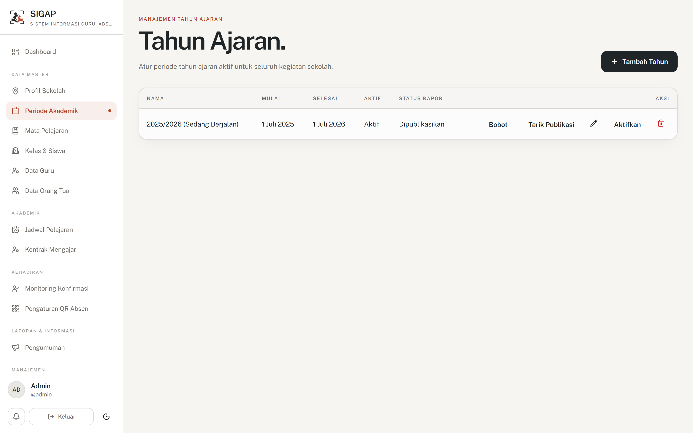
Periode akademik — satu periode aktif menjadi acuan seluruh data.
Menu Data Master → Periode Akademik.
Klik Tambah dan isi nama periode (misal 2025/2026), tanggal mulai, dan tanggal selesai.
Tandai satu periode sebagai Aktif — semua kelas, jadwal, jurnal, dan nilai mengacu ke periode aktif ini.
Pada periode aktif, atur Publikasi Nilai: aktif berarti orang tua dapat melihat nilai dan rapor; mati berarti nilai hanya dilihat guru dan kepala sekolah.
Gunakan tombol publikasi ini sebagai “keran” di akhir semester, setelah semua nilai guru selesai diinput.
3.3 Mata pelajaran dan KKM
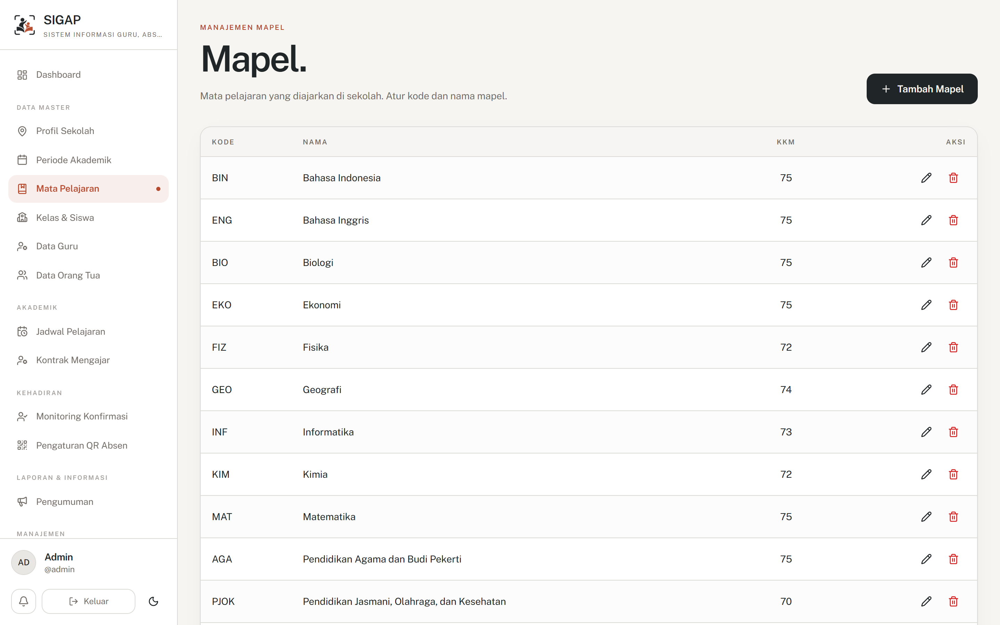
Mata Pelajaran — kode dan KKM per mapel menjadi dasar predikat rapor.
Menu Data Master → Mata Pelajaran. Tambahkan mapel beserta kode dan KKM (kriteria ketuntasan
minimum). KKM dipakai sistem untuk menandai nilai tuntas/tidak tuntas dan menghitung predikat pada rapor.
3.4 Kelas dan siswa
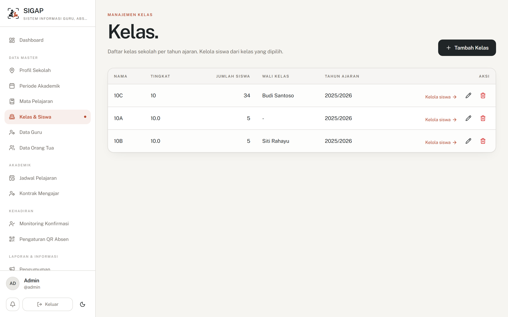
Kelas & Siswa — kelas dibuat lebih dulu, lalu siswa diisi ke dalamnya.
Buat kelas lebih dulu: nama kelas (misal 10A), tingkat, dan periode akademik.
Klik kelas untuk membuka daftar siswa kelas tersebut.
Tambah siswa satu per satu dengan Tambah Siswa, atau massal lewat Import CSV (lihat 3.5).
Isian siswa: NIS, nama, kelas, telepon, alamat.
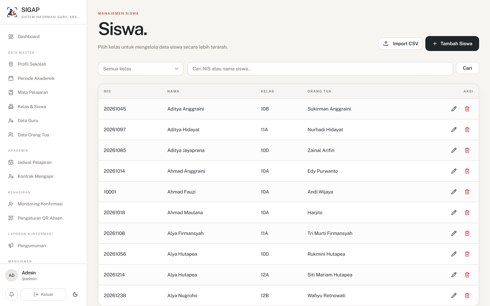
Daftar siswa dalam satu kelas, lengkap dengan kolom aksi ubah dan hapus.
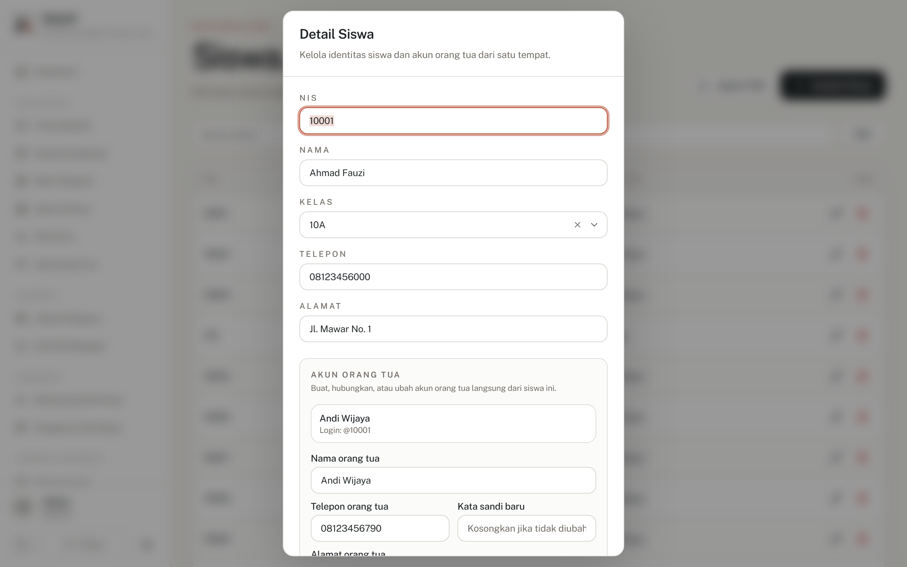
Blok Akun Orang Tua di dalam formulir siswa — membuat, menautkan, atau melepas akun.
Di dalam formulir siswa ada blok Akun Orang Tua dengan tiga pilihan:
Buat akun baru — isi nama orang tua dan kata sandi. Username otomatis memakai NIS anak.
Pakai akun yang ada — menautkan akun orang tua yang sudah punya anak lain, sehingga satu akun bisa melihat beberapa anak sekaligus.
Lepas akun — memutus hubungan; jika akun itu tidak lagi menaungi anak mana pun, akunnya ikut terhapus.
3.5 Import siswa massal sekaligus akun orang tua
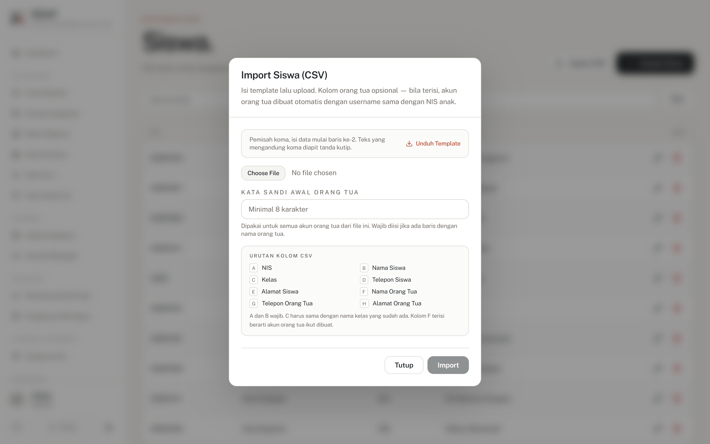
Import CSV — unduh template, pilih berkas, tentukan kata sandi awal akun orang tua.
Untuk mengisi puluhan siswa sekaligus, gunakan Import CSV di halaman siswa.
Klik Import CSV → jendela formulir terbuka.
Klik Unduh Template untuk mendapatkan berkas import-siswa.csv.
Isi data mulai baris ke-2. Satu baris = satu siswa.
Kembali ke SIGAP, klik Choose file, pilih berkas yang sudah diisi.
Jika ada baris yang mengisi Nama Orang Tua, isi Kata Sandi Awal Orang Tua (minimal 8 karakter). Kata sandi ini dipakai untuk semua akun orang tua yang dibuat dari berkas tersebut.
Klik Import.
Baca hasilnya: jumlah siswa yang masuk, jumlah akun orang tua yang dibuat, dan daftar baris yang ditolak beserta alasannya.
Urutan kolom pada template
Kolom
Isi
Keterangan
A
NIS
Wajib. Tidak boleh sama dengan NIS yang sudah ada.
B
Nama Siswa
Wajib.
C
Kelas
Harus sama persis dengan nama kelas yang sudah dibuat. Diabaikan bila import dilakukan dari halaman kelas.
D
Telepon Siswa
Opsional.
E
Alamat Siswa
Opsional.
F
Nama Orang Tua
Opsional — tetapi kalau terisi, akun orang tua dibuat otomatis.
G
Telepon Orang Tua
Opsional.
H
Alamat Orang Tua
Opsional.
Yang perlu diketahui:
Pemisah antar kolom adalah koma. Teks yang mengandung koma harus diapit tanda kutip, contoh: "Jl. Mawar No. 5, RT 01/RW 02". Berkas berpemisah titik-koma (;) juga diterima.
Baris pertama boleh header; sistem membacanya sebagai penanda kolom, jadi urutan kolom boleh diubah selama nama kolomnya dikenali.
Membuka CSV di Excel dengan pengaturan regional Indonesia sering membuat semua kolom menumpuk di satu sel. Itu hanya tampilan: selama isinya dipisah koma, sistem tetap membacanya dengan benar. Untuk melihat per kolom, gunakan Data → From Text/CSV lalu pilih pemisah Comma.
Baris dengan NIS yang sudah dipakai tidak akan menimpa data lama — baris itu dilewati dan dilaporkan, sehingga Anda bisa memperbaiki berkas lalu mengimpor ulang bagian yang gagal saja.
Import dari halaman sebuah kelas mengabaikan kolom Kelas: semua baris masuk ke kelas yang sedang dibuka.
3.6 Data guru dan kontrak mengajar
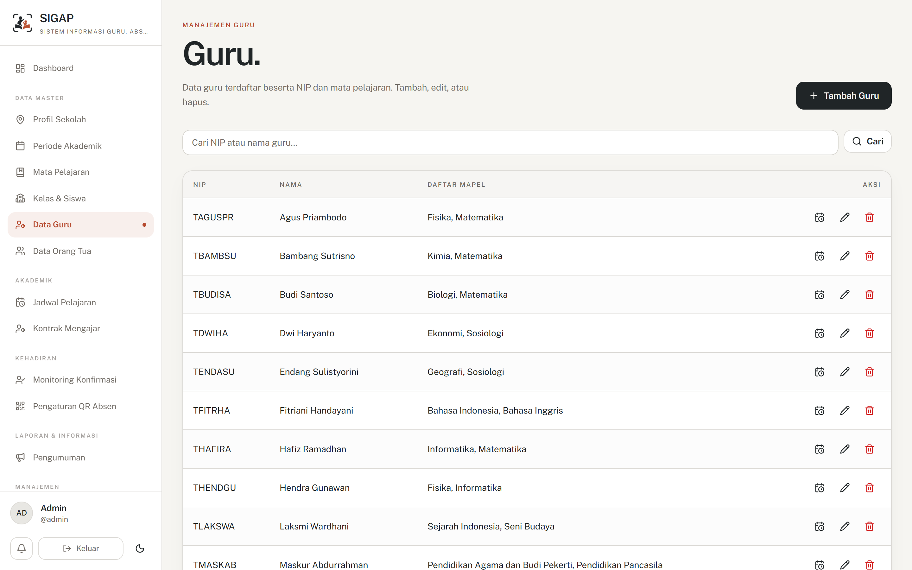
Data Guru — menautkan akun pengguna ke identitas guru dan mata pelajaran yang diampu.
Data Master → Data Guru: tautkan seorang guru ke akun pengguna, isi NIP, telepon, dan mata pelajaran yang diampu.
Akademik → Kontrak Mengajar: menentukan guru mengajar kelas mana saja, dan siapa wali kelas-nya. Satu kelas punya satu wali kelas per periode akademik.
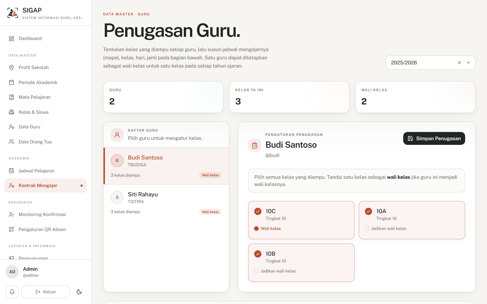
Kontrak Mengajar — batas kelas yang terlihat oleh tiap guru ditentukan di sini.
Kontrak mengajar inilah yang membuat seorang guru hanya melihat kelas tertentu di layarnya.
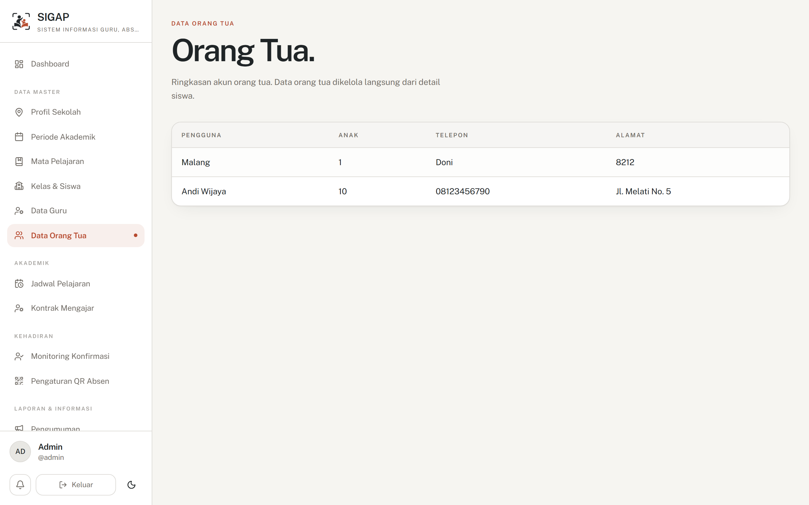
Data Orang Tua bersifat baca-saja: pembuatan dan perubahan akun dilakukan dari halaman siswa atau lewat import CSV.
Menu Data Master → Data Orang Tua hanya membaca: daftar akun wali beserta jumlah anak yang terhubung.
Pembuatan dan perubahan akun orang tua dilakukan dari formulir siswa (3.4) atau lewat import CSV (3.5), supaya
relasi akun dan anak tidak terpisah.
3.7 Jadwal pelajaran
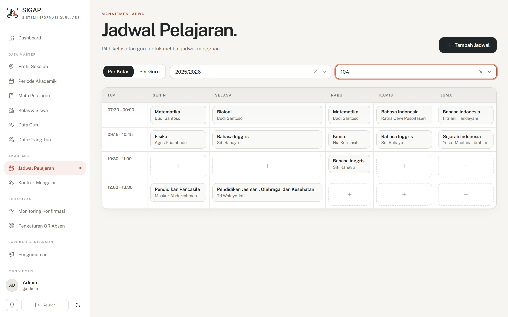
Jadwal Pelajaran — daftar sesi per kelas dan per guru.
Menu Akademik → Jadwal Pelajaran. Pilih periode akademik, lalu saring per kelas atau guru untuk melihat
jadwal yang berjalan.
Tombol Tambah membuka formulir: kelas, mata pelajaran, guru, hari, jam mulai, dan jam selesai. Jam pada
jadwal menentukan daftar “hari ini” yang dilihat guru, sekaligus menjadi dasar perhitungan sesi terlewat bagi
kepala sekolah.
3.8 Pengaturan QR absen dan layar QR
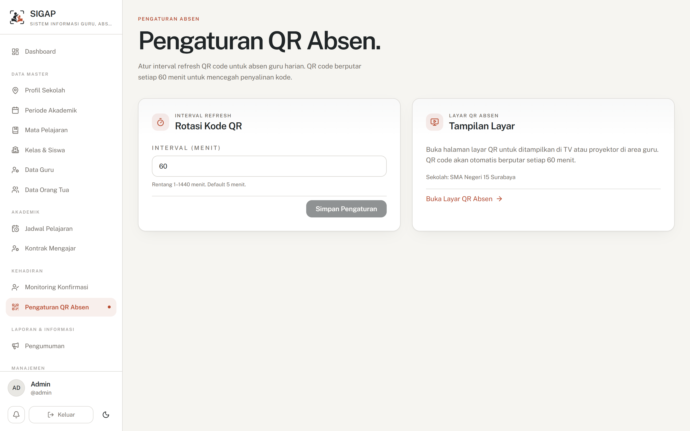
Pengaturan QR Absen — menentukan berapa lama satu kode QR berlaku.
Menu Kehadiran → Pengaturan QR Absen mengatur interval pergantian QR — berapa detik satu kode QR
berlaku sebelum berganti. Nilai kecil (misal 30–60 detik) membuat QR tidak bisa difoto lalu dipakai dari rumah.
Setelah disimpan, buka Layar QR Absen untuk menampilkan QR berukuran besar di TV atau proyektor di ruang guru.
Layar QR Absen — tampilan untuk TV/proyektor, berganti otomatis sesuai interval.
Kode pada layar ini dibuat dari data sekolah dan diperbarui otomatis sesuai interval. Guru memindainya dari akun masing-masing.
3.9 Pengguna, peran, dan hak akses
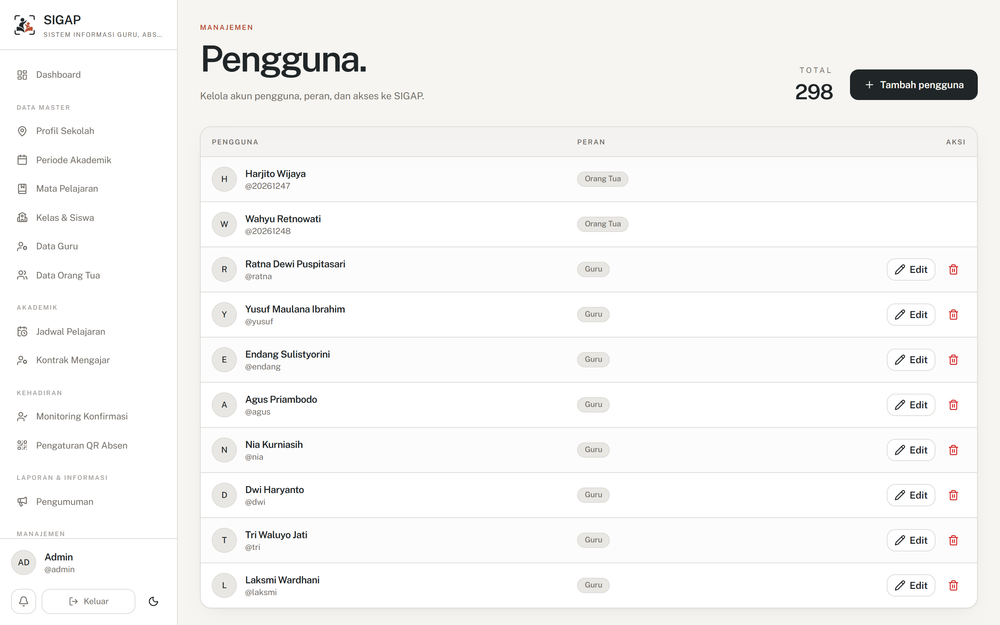
Pengguna — menambah akun, menentukan peran, menonaktifkan akun.
Manajemen → Pengguna: menambah akun, mengatur nama, telepon, peran, dan status aktif. Akun yang dinonaktifkan tidak bisa masuk tetapi datanya tetap tersimpan.
Manajemen → Peran & Hak Akses: setiap peran tersusun dari kumpulan hak akses (misalnya journals.create, grades.edit, students.view). Menambah hak ke sebuah peran langsung mengubah menu yang muncul di sidebar pengguna peran itu.
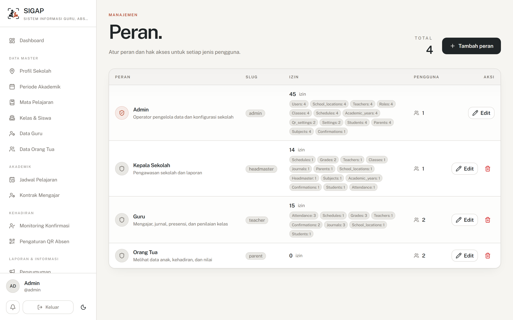
Peran & Hak Akses — centang hak tertentu untuk membentuk wewenang sebuah peran.
3.10 Pengumuman
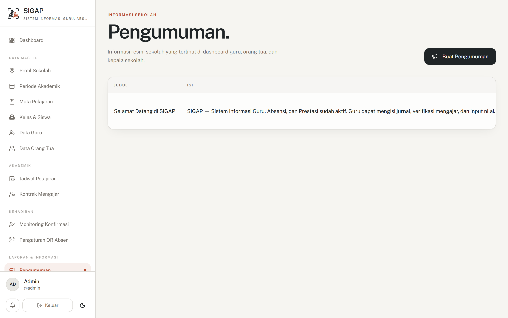
Pengumuman — informasi sekolah yang tampil di dasbor pengguna sasaran.
Menu Laporan & Informasi → Pengumuman. Judul dan isi pengumuman tersimpan dan muncul di dasbor pengguna
yang menjadi sasarannya, termasuk orang tua.
Bagian 4 — Guru
4.1 Dashboard jadwal hari ini
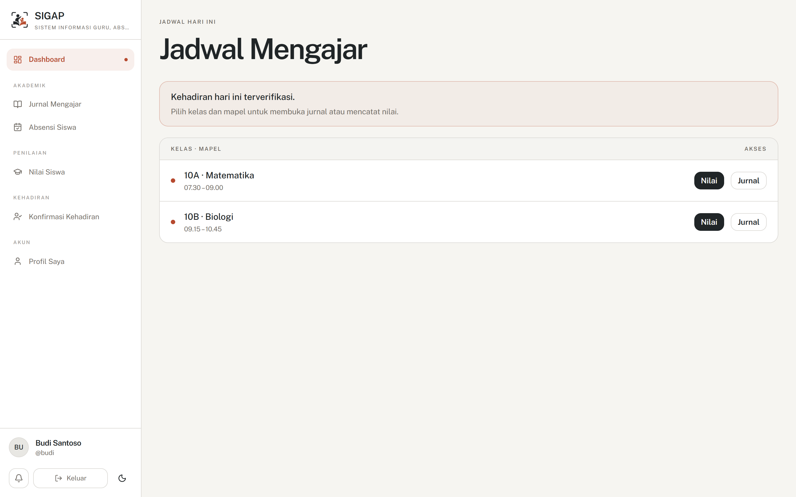
Jadwal Mengajar — sebelum konfirmasi, daftar sesi masih terkunci dan tersedia tombol Scan QR Absen.
Guru masuk ke halaman Jadwal Mengajar. Isinya daftar sesi hari itu: kelas, mata pelajaran, jam mulai–selesai.
Perlu diketahuiSebagian menu guru (jurnal, nilai, absensi) terkunci sampai guru melakukan
konfirmasi kehadiran hari itu. Layar menampilkan pesan Akses terkunci dan tombol Scan QR Absen.
Ini disengaja, agar catatan kehadiran dan catatan mengajar selalu berpasangan.
4.2 Konfirmasi kehadiran dengan QR
Menu Kehadiran → Konfirmasi Kehadiran.
Klik Scan QR Absen dan arahkan kamera ke layar QR di ruang guru.
Izinkan akses kamera dan lokasi saat peramban meminta.
Sistem menampilkan Lokasi Anda (koordinat dan jarak ke sekolah). Bila posisi belum terbaca, tunggu atau klik Perbarui lokasi.
Klik Verifikasi Kehadiran.
Setelah berhasil muncul status Sudah terverifikasi dan Kehadiran hari ini sudah tercatat.
Hasil konfirmasi
Kondisi
Yang tercatat
Di dalam radius sekolah, sebelum jam mulai
Hadir, tepat waktu
Di dalam radius, setelah jam mulai
Hadir, ditandai Terlambat
Di luar radius sekolah
Tetap tersimpan, tetapi ditandai di luar sekolah dan masuk laporan kepala sekolah
Satu guru hanya punya satu catatan konfirmasi per hari. Setelah terverifikasi, seluruh menu guru terbuka — klik
Lihat Jadwal Hari Ini untuk kembali.
4.3 Jurnal mengajar dan presensi siswa
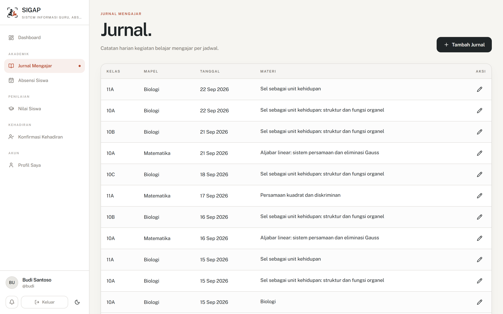
Jurnal Mengajar — daftar catatan yang sudah diisi beserta tombol Tambah Jurnal.
Menu Akademik → Jurnal Mengajar. Halaman ini berisi jurnal yang sudah Anda isi, dan tombol
Tambah Jurnal di kanan atas.
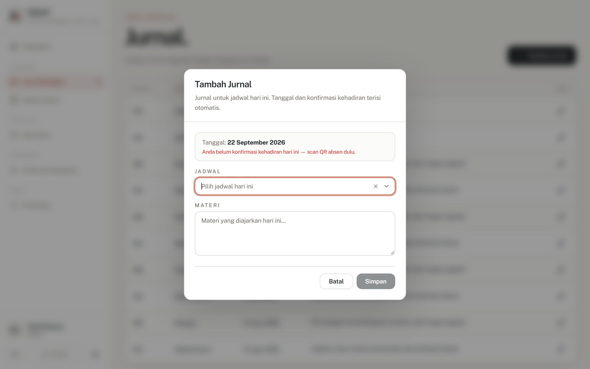
Form jurnal — tanggal dan bukti kehadiran terisi otomatis; Anda memilih jadwal dan menulis materi.
Isi jurnal hanya untuk jadwal hari ini. Tanggal dan konfirmasi kehadiran terisi otomatis — Anda tidak perlu mengetiknya.
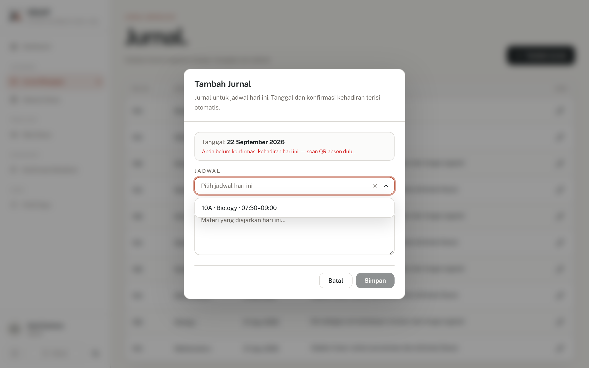
Kolom Jadwal — hanya sesi milik Anda pada hari itu yang muncul, lengkap dengan kelas, mapel, dan jam.
Klik kolom Jadwal, lalu pilih sesi yang ingin dicatat.
Jika jurnal untuk sesi itu sudah ada, sistem menampilkannya kembali dan materi akan diperbarui, bukan dibuat duplikat.
Isi Materi — ringkasan yang diajarkan hari itu.
Bagian Presensi Siswa otomatis memunculkan daftar siswa kelas tersebut. Setiap siswa punya empat tombol: Hadir, Sakit, Izin, Alpa. Semua siswa awalnya dianggap Hadir; ubah yang tidak masuk saja. Ringkasan jumlah tiap status terlihat di kanan atas daftar.
Presensi siswa dalam jurnal — satu sentuhan per siswa, rekap status otomatis.
Klik Simpan. Materi dan presensi tersimpan sekaligus.
Bila daftar jadwal kosongBerarti hari itu memang tidak ada jadwal mengajar untuk akun Anda —
periksa kontrak mengajar dan jadwal pelajaran bersama administrator.
4.4 Nilai siswa
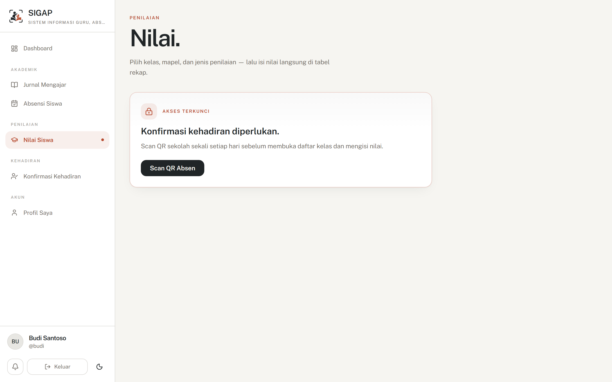
Nilai Siswa — pilih kelas dan mapel, lalu isi per komponen penilaian.
Menu Penilaian → Nilai Siswa.
Pilih Kelas dan Mapel pada penyaring di atas.
Sistem menampilkan daftar siswa beserta komponen nilai yang berlaku pada periode aktif (misalnya Tugas, UTS, UAS) dan Nilai Akhir hasil perhitungan bobot.
Klik Tambah untuk memasukkan atau mengubah nilai satu siswa, atau isi beberapa nilai lalu klik Simpan.
Predikat dan status tuntas dihitung otomatis memakai KKM mata pelajaran.
Guru hanya dapat menilai kelas dan mapel sesuai kontrak mengajarnya. Sama seperti jurnal, akses nilai terkunci
sebelum konfirmasi kehadiran hari itu.
4.5 Rekap absensi siswa
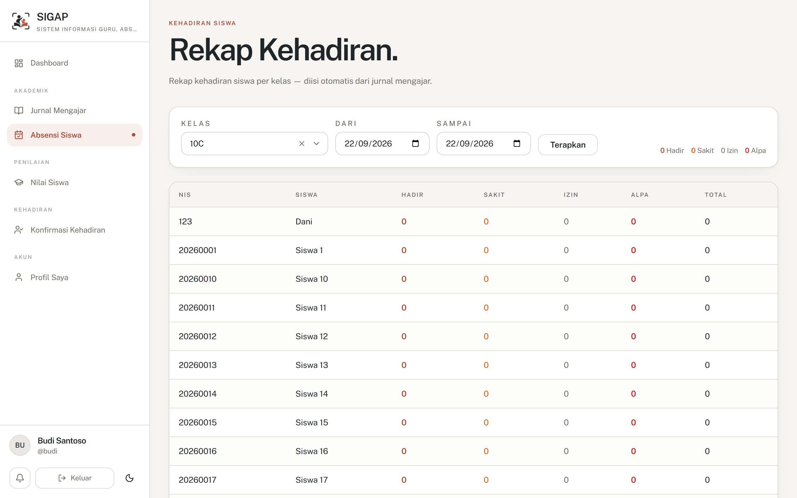
Absensi Siswa — baca ulang presensi yang lahir dari jurnal mengajar.
Menu Akademik → Absensi Siswa adalah baca ulang presensi yang sudah tercatat lewat jurnal: per kelas, per
tanggal, per siswa. Karena absensi lahir dari jurnal, halaman ini tidak punya formulir isian — cara menambah
catatan absensi adalah dengan mengisi jurnal mengajar.
4.6 Rapor siswa
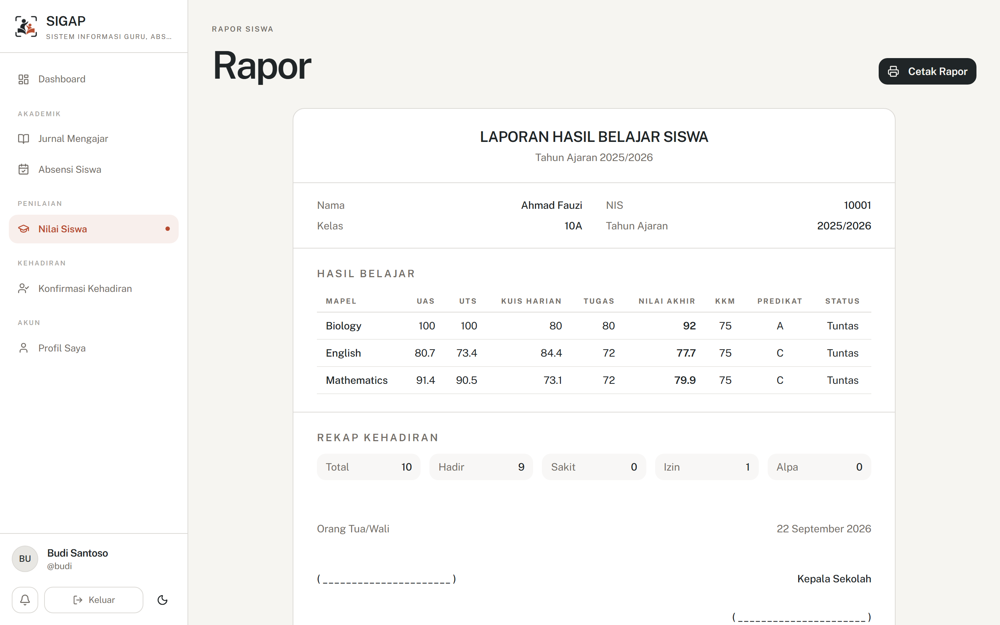
Rapor — rekap nilai dan kehadiran satu siswa, siap dicetak.
Halaman Rapor menampilkan rekap nilai satu siswa dalam format siap cetak: identitas, nilai per mata
pelajaran, nilai akhir, predikat, keterangan tuntas, dan rekap kehadiran. Gunakan fitur cetak peramban
(Ctrl+P) untuk menyimpannya sebagai PDF.
Bagian 5 — Kepala Sekolah
Kepala sekolah masuk ke halaman Pengawasan Sekolah (kelompok menu Dasbor Kepala Sekolah).
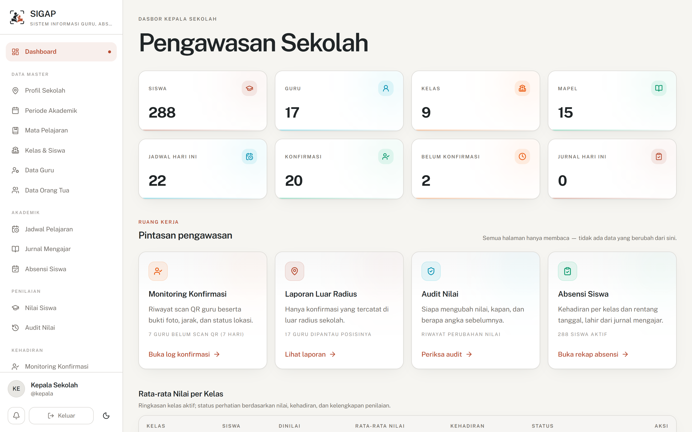
Dasbor pengawasan: delapan kartu ringkasan, rata-rata nilai per kelas, dan kehadiran guru 30 hari.
5.1 Delapan kartu ringkasan
Kartu
Artinya
Siswa
Jumlah siswa terdaftar.
Guru
Jumlah akun guru.
Kelas
Jumlah kelas pada periode aktif.
Mapel
Jumlah mata pelajaran.
Jadwal Hari Ini
Sesi yang seharusnya berjalan hari ini.
Konfirmasi
Guru yang sudah memindai QR hari ini.
Belum Konfirmasi
Guru yang belum memindai QR — angka yang paling perlu diperhatikan setiap pagi.
Jurnal Hari Ini
Jumlah jurnal yang sudah diisi hari ini.
5.2 Rata-rata Nilai per Kelas
Tabel ini merangkum tiap kelas aktif: Kelas, Siswa, Dinilai, Rata-rata Nilai, Kehadiran, Status, Aksi.
Kolom Dinilai memakai format 5/5 — berapa siswa yang sudah punya nilai dibandingkan jumlah siswanya. Kelas 10C 0/34 berarti belum ada nilai masuk sama sekali.
Kolom Status menandai kelas yang perlu ditindaklanjuti (misal Perlu perhatian) berdasarkan nilai, kehadiran, dan kelengkapan penilaian.
Tautan Detail nilai membuka lembar nilai per siswa untuk kelas tersebut — hanya membaca, kepala sekolah tidak mengubah angka di sini.
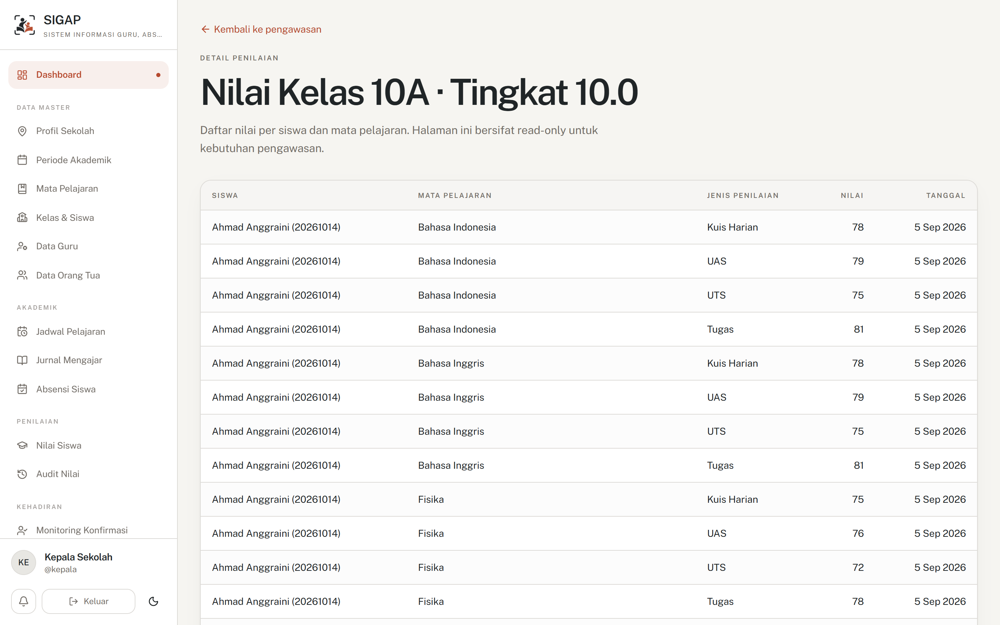
Detail nilai satu kelas: siswa, mata pelajaran, jenis penilaian, nilai, dan tanggal.
5.3 Kehadiran Guru (30 Hari)
Tabel kedua di dasbor membandingkan konfirmasi QR dengan hari mengajar yang dijadwalkan: Guru, Hari Hadir, Tingkat Kehadiran, Status, Aksi. Barisnya berbunyi misalnya Siti Rahayu · 6/17 · 35,29% · Perlu perhatian. Tautan Riwayat membuka daftar sesi guru tersebut.
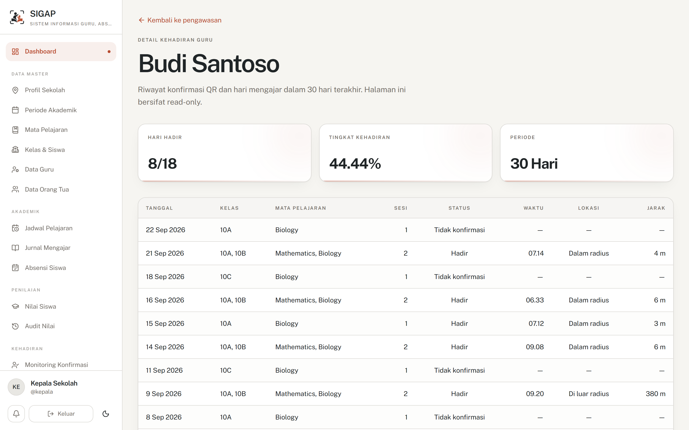
Riwayat kehadiran satu guru — kolom Sesi dan Jarak menunjukkan apakah guru hadir pada sesi yang diampu dan di mana posisinya saat memindai.
Menu Kehadiran → Monitoring Konfirmasi membuka Log Kehadiran Guru. Bagian atas menampilkan ringkasan hari ini, misalnya 2 dari 2 guru sudah konfirmasi hari ini · Batas tepat waktu 07:00. Di bawahnya ada penyaring Dari Tanggal, Sampai Tanggal, dan Guru (tombol Reset muncul saat penyaring aktif). Gunakan rentang tanggal untuk melihat histori, misalnya satu bulan terakhir.
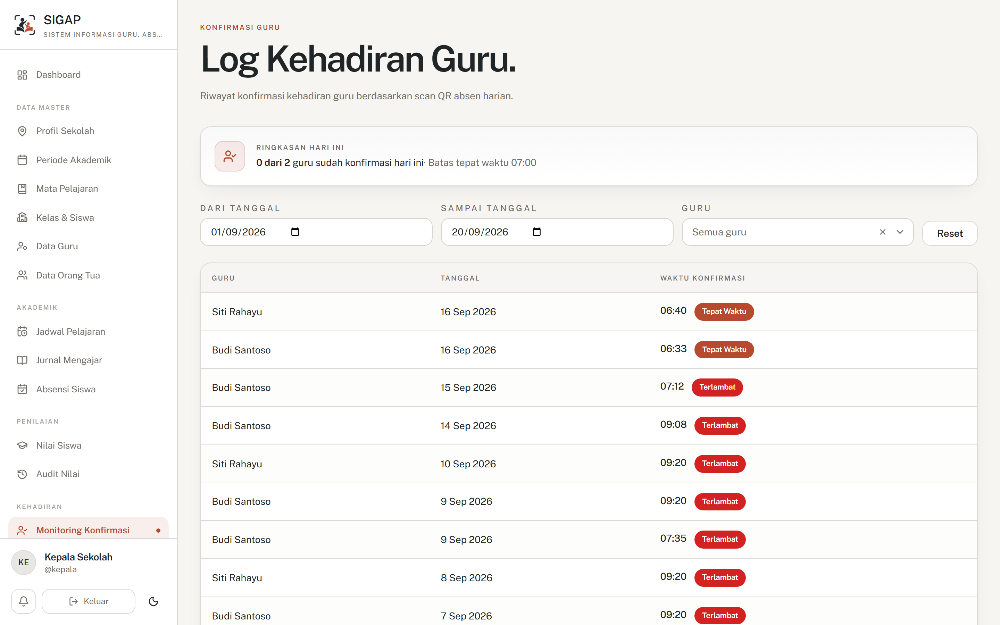
Log kehadiran guru setelah rentang tanggal diperlebar — tiap baris adalah satu konfirmasi QR beserta waktu dan jaraknya.
5.5 Laporan Kehadiran Guru
Menu Laporan → Laporan Kehadiran Guru khusus menampilkan konfirmasi yang tercatat di luar radius sekolah — kolomnya Guru, Kelas, Mapel, Jarak, Konfirmasi, Status. Laporan inilah yang dipakai menindaklanjuti dugaan absensi tidak di lokasi.
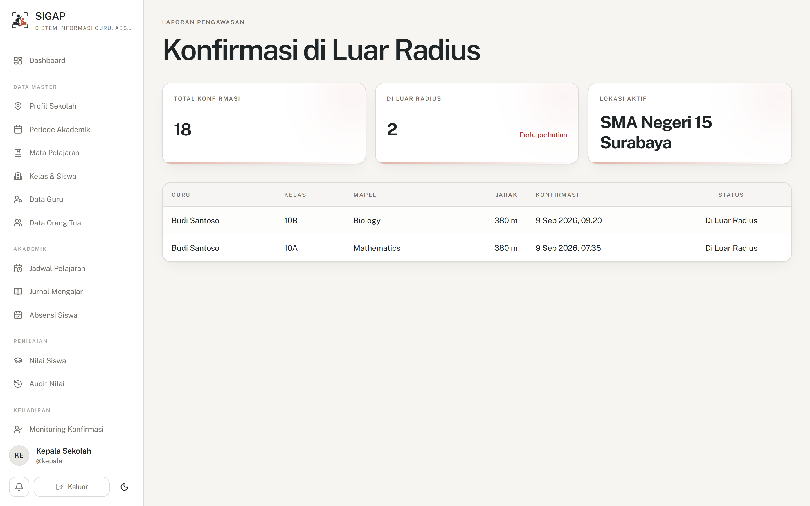
Konfirmasi di luar radius sekolah, lengkap dengan jarak dari titik pusat sekolah.
5.6 Audit Nilai
Menu Penilaian → Audit Nilai berisi riwayat perubahan nilai: Waktu, Siswa, Mapel, Kelas, Jenis, Aksi, Nilai, Oleh. Setiap perubahan tercatat otomatis — nilai lama dan nilai baru sama-sama ditampilkan — dan tidak dapat dihapus dari layar. Ini pegangan saat ada keberatan orang tua terhadap sebuah nilai.
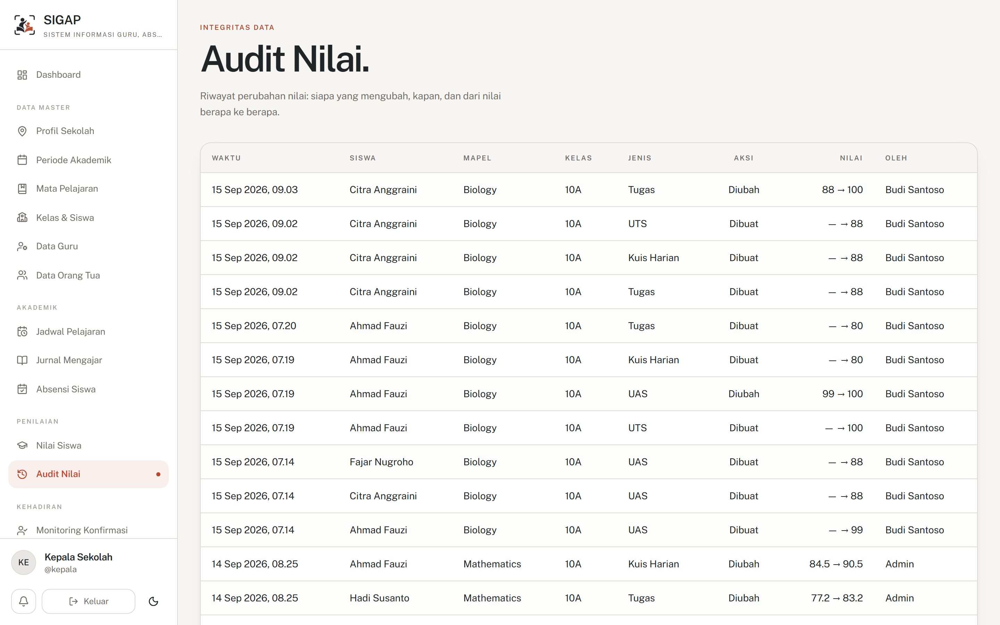
Riwayat audit nilai: siapa mengubah, kapan, dan berapa nilai sebelumnya.
Batas peranKepala sekolah tidak mengubah data master; perannya mengawasi dan menindaklanjuti. Untuk memperbaiki nilai, minta guru pengampu yang mengubahnya agar jejak audit tetap jelas.
Bagian 6 — Orang Tua/Wali
6.1 Masuk dan melihat daftar anak
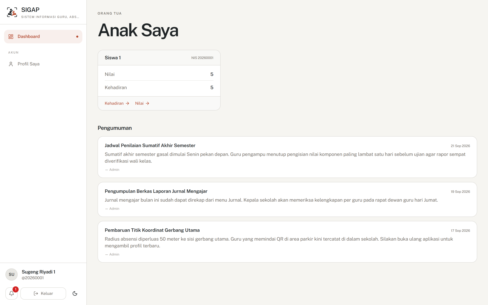
Dashboard orang tua — semua anak yang tertaut pada satu akun.
Orang tua masuk memakai username = NIS anak dan kata sandi yang diberikan sekolah (bisa dibuatkan lewat
import CSV atau oleh administrator di halaman siswa). Dasbor menampilkan seluruh anak yang tertaut ke akun
tersebut, lengkap dengan kelas dan ringkasan kehadirannya.
6.2 Nilai dan rapor anak
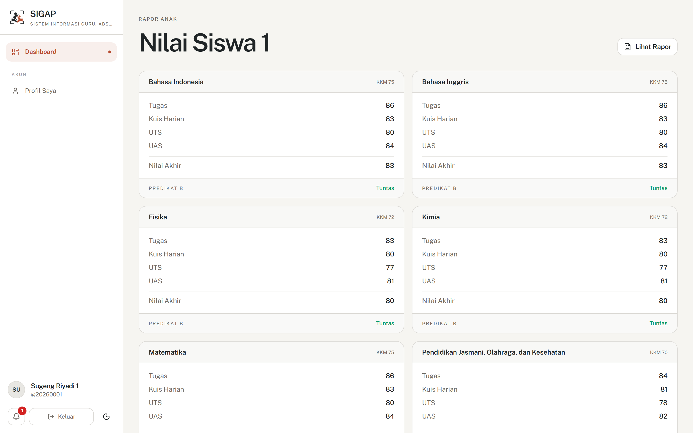
Nilai anak per mata pelajaran beserta predikat.
Pilih anak, lalu buka Nilai. Yang terlihat: nilai tiap komponen per mata pelajaran, nilai akhir, predikat,
dan keterangan tuntas terhadap KKM.
Publikasi nilaiNilai baru tampil setelah sekolah mempublikasikan nilai pada periode
akademik (diatur administrator/kepala sekolah di menu Periode Akademik). Sebelum itu, halaman tetap terbuka tetapi
daftar nilai kosong.
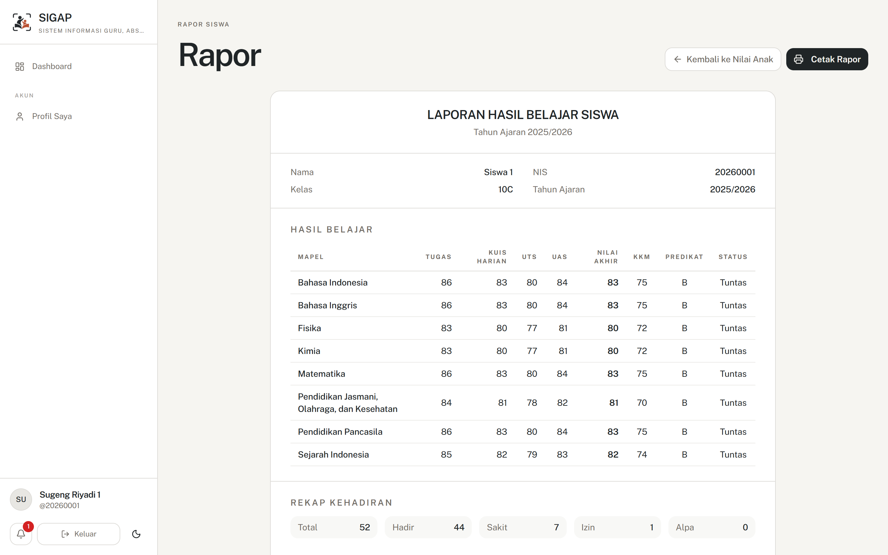
Rapor anak — dapat dicetak atau disimpan sebagai PDF.
6.3 Absensi anak
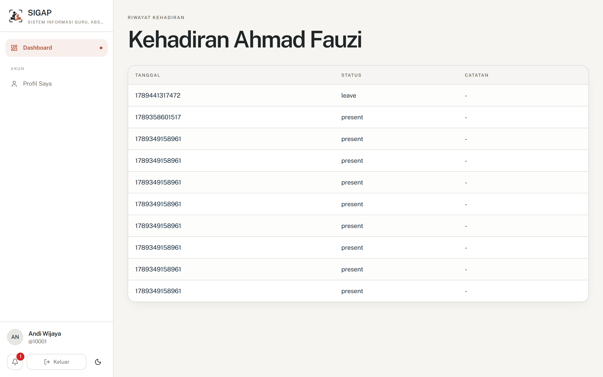
Rekap kehadiran anak per tanggal.
Rekap kehadiran per tanggal beserta total Hadir, Sakit, Izin, dan Alpa. Data ini berasal dari jurnal yang diisi
guru pengampu pada hari tersebut.
6.4 Notifikasi dan pengumuman
Ikon lonceng di pojok sidebar menampilkan pemberitahuan pribadi (misalnya ada nilai baru). Pengumuman sekolah
muncul di halaman utamanya. Orang tua juga dapat mengganti kata sandi sendiri di Profil Saya.
Bagian 7 — Alur Harian Ringkas
7.1 Satu hari untuk guru
Waktu
Aksi di SIGAP
Tiba di sekolah
Kehadiran → Konfirmasi Kehadiran → pindai QR di ruang guru → verifikasi
Sebelum mengajar
Akademik → Jurnal Mengajar → Tambah Jurnal → pilih sesi, tulis materi, tandai siswa yang tidak hadir, simpan
Setelah ujian
Penilaian → Nilai Siswa → pilih kelas & mapel → input nilai → simpan
Sepanjang hari
Ulangi jurnal untuk setiap sesi yang diampu
7.2 Menyiapkan awal semester (administrator)
Profil sekolah — identitas, koordinat, radius, jam mulai.
Periode akademik baru → tandai Aktif.
Mata pelajaran beserta KKM.
Kelas untuk periode itu.
Import CSV siswa (isi kolom orang tua bila ingin akun wali dibuat sekaligus).
Data guru + kontrak mengajar + wali kelas.
Jadwal pelajaran per kelas.
Pengaturan QR absen → pastikan layar QR tampil dengan benar.
Buat akun pengguna dan tentukan perannya.
7.3 Akhir semester (administrator & kepala sekolah)
Kepala sekolah memeriksa Audit Nilai dan Sesi terlewat.
Guru memastikan seluruh jurnal dan nilai lengkap.
Administrator mengaktifkan Publikasi Nilai pada periode aktif.
Orang tua dapat melihat nilai dan rapor anaknya; cetak rapor bila diperlukan.
Nonaktifkan publikasi bila nilai masih perlu diperbaiki.
Bagian 8 — Tips dan Pemecahan Masalah
Gejala
Penyebab umum
Yang dilakukan
Menu yang dicari tidak muncul
Hak akses peran Anda memang tidak mencakup menu itu
Lihat Lampiran A, atau minta administrator menyesuaikan peran
Tombol jurnal/nilai bertuliskan Akses terkunci
Belum konfirmasi kehadiran hari ini
Pindai QR lebih dulu (Bagian 4.2)
Kamera tidak muncul saat pindai
Izin kamera belum diberikan, atau halaman dibuka tanpa HTTPS di luar localhost
Buka lewat alamat https://…, atau izinkan kamera di pengaturan peramban
Muncul “Di luar radius sekolah”
Posisi GPS belum akurat, atau guru benar-benar di luar sekolah
Tunggu posisi terbaca, klik Perbarui lokasi, pastikan GPS perangkat aktif
Daftar jadwal pada jurnal kosong
Tidak ada jadwal mengajar hari itu, atau kontrak/jadwal belum dibuat
Periksa jadwal pelajaran dan kontrak mengajar bersama administrator
Import CSV menolak banyak baris
NIS sudah dipakai, nama kelas tidak sama persis, atau kolom orang tua terisi tanpa kata sandi
Baca daftar alasan per baris, perbaiki berkasnya, impor ulang bagian yang gagal
Semua kolom CSV menumpuk di satu sel
Pengaturan regional Excel memakai pemisah titik-koma
Tidak masalah untuk sistem. Untuk melihat per kolom: Data → From Text/CSV, pemisah Comma
Orang tua tidak melihat nilai
Publikasi nilai periode aktif masih mati
Aktifkan di Periode Akademik
Nilai anak tidak lengkap
Guru belum menyimpan nilai komponen
Cek Progres nilai di dasbor kepala sekolah
Data sudah diubah tapi layar masih lama
Sesi peramban menggantung
Muat ulang halaman (Ctrl+R)
Lupa kata sandi
—
Administrator menyetel ulang di Pengguna; pengguna dapat menggantinya sendiri di Profil Saya bila masih ingat sandi lama
QR di layar tidak berganti
Interval terlalu besar atau halaman layar QR tidak aktif
Perkecil interval di Pengaturan QR Absen, buka ulang layar QR
Tiga kebiasaan yang membuat data selalu rapi
Guru mengisi jurnal pada hari yang sama — presensi siswa lahir dari jurnal.
Administrator tidak mengubah NIS siswa yang sudah punya riwayat nilai.
Publikasi nilai dipakai sebagai keran, bukan dibiarkan terbuka sepanjang semester.
Lampiran A — Menu yang tampak per peran
Kelompok menu
Admin
Guru
Kepala Sekolah
Orang Tua
Dashboard
•
Jadwal Mengajar
Pengawasan Sekolah
Dashboard Anak
Profil Sekolah
ya
–
ya
–
Periode Akademik
ya
–
ya
–
Mata Pelajaran
ya
–
ya
–
Kelas & Siswa
ya
–
ya
–
Data Guru
ya
–
ya
–
Data Orang Tua
ya
–
ya
–
Jadwal Pelajaran
ya
–
ya
–
Kontrak Mengajar
ya
–
–
–
Jurnal Mengajar
–
ya
ya
–
Absensi Siswa
–
ya
ya
–
Nilai Siswa
–
ya
ya
–
Audit Nilai
–
–
ya
–
Konfirmasi Kehadiran
–
ya
–
–
Monitoring Konfirmasi
ya
–
ya
–
Pengaturan QR Absen
ya
–
–
–
Pengawasan Sekolah
–
–
ya
–
Laporan Kehadiran Guru
–
–
ya
–
Pengumuman
ya
–
–
ya
Pengguna
ya
–
–
–
Peran & Hak Akses
ya
–
–
–
Profil Saya
ya
ya
ya
ya
Daftar di atas mengikuti hak akses, sehingga dapat berubah jika administrator menyesuaikan peran.
Lampiran B — Glosarium
NIS
Nomor induk siswa. Dipakai sebagai username akun orang tuanya.
Periode akademik
Tahun ajaran aktif; semua kelas, jadwal, jurnal, dan nilai mengacu ke sini.
Mapel
Mata pelajaran.
KKM
Kriteria ketuntasan minimum; ambang nilai tuntas per mata pelajaran.
Komponen nilai
Jenis penilaian (misal Tugas, UTS, UAS) beserta bobotnya.
Nilai akhir
Hasil perhitungan bobot seluruh komponen.
Predikat
Label mutu nilai akhir.
Konfirmasi kehadiran
Absensi guru harian lewat QR, berisi waktu, foto, dan posisi.
Geofence
Pembatas area berbasis radius sekolah.
Jurnal mengajar
Catatan kegiatan belajar per sesi; sekaligus sumber data absensi siswa.
Sesi terlewat
Jadwal yang sudah lewat tanpa jurnal.
Audit nilai
Riwayat perubahan nilai: pelaku, waktu, nilai lama, nilai baru.
Publikasi nilai
Saklar yang membuat nilai dan rapor terlihat oleh orang tua.
Wali kelas
Guru yang bertanggung jawab atas satu kelas.
Lampiran C — Akun demo lingkungan percobaan
Akun berikut tersedia setelah npm run seed dijalankan pada lingkungan percobaan. Jangan
memakainya di lingkungan sekolah yang sebenarnya — ganti seluruh kata sandinya.